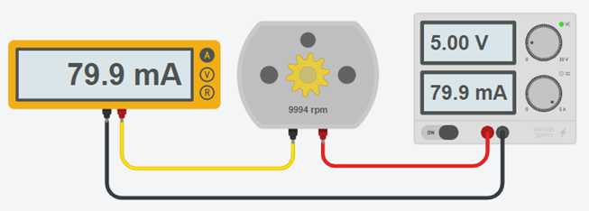
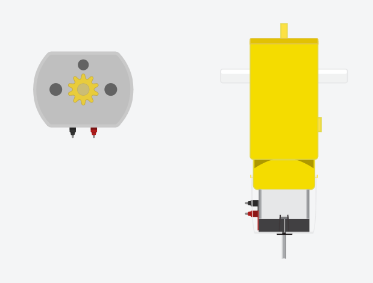

Een DC motor of gelijkstroommotor is de eenvoudigste elektromotor die er is. Zet er spanning op en de as draait. Hoe hoger de spanning, hoe sneller. Draai je de polariteit om, dan draait hij de andere kant op.
Meer stuurmogelijkheden zijn er niet, en dat maakt hem gemakkelijk om te gebruiken. Een DC motor telt geen omwentelingen en kent geen hoek, dus hij weet zelf niet waar hij staat. Wil je weten hoe ver hij gedraaid heeft, dan moet je dat er zelf bij meten, bijvoorbeeld met een eindeloopschakelaar.
| Wat je wil | Wat je doet |
|---|---|
| Sneller of trager | Hogere of lagere gemiddelde spanning, in de praktijk met PWM |
| Andere richting | De twee draden van plaats wisselen, in de praktijk met een H-brug |
| Stoppen | De spanning wegnemen |
Een led hing je met een weerstand aan een uitgangspin. Bij een motor lukt dat niet. Een digitale pin van de UNO mag maximaal ongeveer 40 mA leveren, en zelfs dat is een absolute grens waar je liever ver onder blijft. Een kleine hobbymotor trekt al snel enkele honderden mA, en op het moment dat hij vanuit stilstand vertrekt nog veel meer.
Hang je hem er toch rechtstreeks aan, dan gebeurt er in het beste geval niets zinvols en in het slechtste geval sneuvelt de uitgang van je microcontroller. Je hebt dus altijd iets tussen de pin en de motor nodig, dat de stroom uit een andere bron haalt en door de pin alleen laat schakelen:
Meet het, in plaats van te gokken. Hang de motor even rechtstreeks aan een voeding en meet de stroom met een multimeter, of lees ze af op de voeding zelf. In TinkerCAD werkt dat precies hetzelfde.

De motor uit dit voorbeeld trekt 80 mA. Dat is dubbel zoveel als een pin ooit mag leveren, en die waarde heb je verderop nodig om je transistor te dimensioneren.
Een motor die vrij ronddraait trekt veel minder dan een motor die iets moet trekken. De stroom die je meet met een vrije as is dus een ondergrens. Rekent je schakeling daar krap op, dan werkt ze in TinkerCAD zonder problemen en begeeft ze het zodra er een wiel aan hangt.
Je vindt de DC motor onder Gelijkstroommotor en onder Hobby motorreductor. Die laatste is een motor met een tandwielkast erop, die trager draait maar meer koppel geeft.
